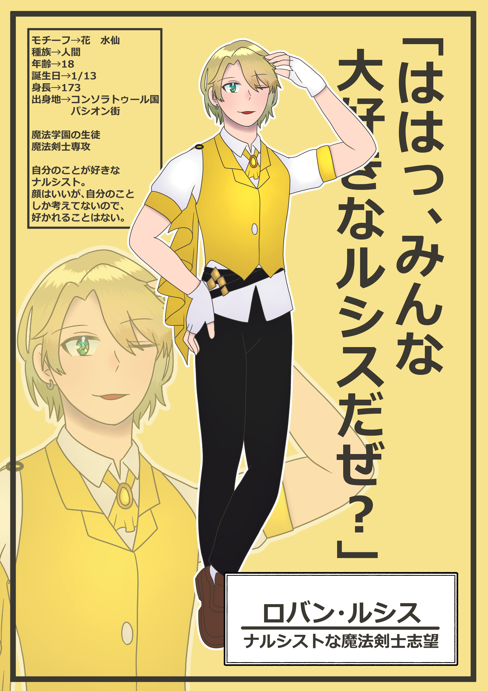

ルシス・ロバン
LUCIS ROBAN

ルシス・ロバン
ナルシストな魔法剣士志望
| モチーフ | 水仙（花） |
| 種族 | 人間 |
| 年齢 | 18歳 |
| 身長 | 173cm |
| 出身地 | パシオン街 |
| 誕生日 | 1月13日 |
| 所属 | 魔法学園 |
| 専攻 | 魔法剣士 |
人物紹介
自分のことが大好きなナルシスト。
顔はいいが、自分のことしか考えていないため、好かれることはない。
サンプルボイス
「ははっ、みんな大好きなルシスだぜ？」
LUCIS ROBAN

ナルシストな魔法剣士志望
| モチーフ | 水仙（花） |
| 種族 | 人間 |
| 年齢 | 18歳 |
| 身長 | 173cm |
| 出身地 | パシオン街 |
| 誕生日 | 1月13日 |
| 所属 | 魔法学園 |
| 専攻 | 魔法剣士 |
自分のことが大好きなナルシスト。
顔はいいが、自分のことしか考えていないため、好かれることはない。